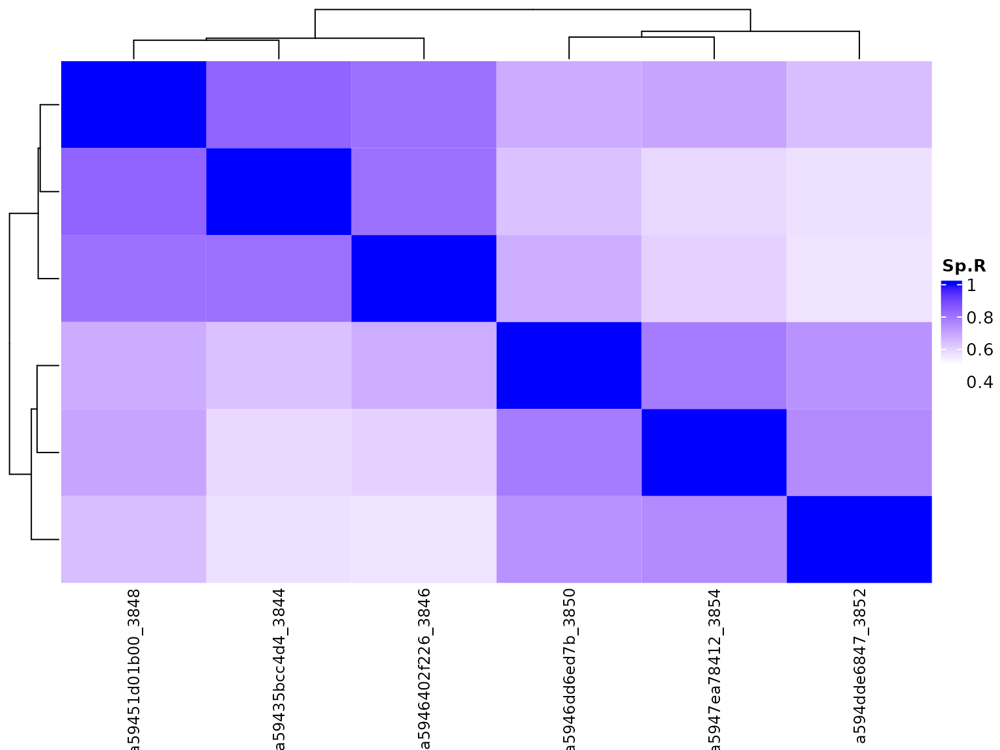

Analysing Long Read RNA-Seq data with bambu
Ying Chen, Andre Sim, Yuk Kei Wan, Jonathan Göke
Source:vignettes/bambu.Rmd
bambu.RmdIntroduction
Bambu is a method for transcript discovery and quantification from long read RNA-Seq data. Bambu uses aligned reads and genome reference annotations as input, and will return abundance estimates for all known transcripts and for newly discovered transcripts. Bambu uses the information from the reference annotations to correct misalignment at splice junctions, then reduces the aligned reads to read equivalent classes, and uses this information to identify novel transcripts across all samples of interest. Reads are then assigned to transcripts, and expression estimates are obtained using an expectation maximisation algorithm. Here, we present an example workflow for analysing Nanopore long read RNA-Sequencing data from two human cancer cell lines from the Singapore Nanopore Expression Project (SG-NEx).
Quick start: Transcript discovery and quantification with bambu
Installation
You can install bambu from github:
if (!requireNamespace("BiocManager", quietly = TRUE)) install.packages("BiocManager")
BiocManager::install("bambu")
BiocManager::install("NanoporeRNASeq")General Usage
The default mode to run bambu is using a set of aligned reads (bam files), reference genome annotations (gtf file, TxDb object, or bambuAnnotation object), and reference genome sequence (fasta file or BSgenome). bambu will return a summarizedExperiment object with the genomic coordinates for annotated and new transcripts and transcript expression estimates. We highly recommend to use the same annotations that were used for genome alignment. If you have a gtf file and fasta file you can run bambu with the following options:
library(bambu)
test.bam <- system.file("extdata", "SGNex_A549_directRNA_replicate5_run1_chr9_1_1000000.bam",
package = "bambu")
fa.file <- system.file("extdata", "Homo_sapiens.GRCh38.dna_sm.primary_assembly_chr9_1_1000000.fa",
package = "bambu")
gtf.file <- system.file("extdata", "Homo_sapiens.GRCh38.91_chr9_1_1000000.gtf", package = "bambu")
bambuAnnotations <- prepareAnnotations(gtf.file)
se <- bambu(reads = test.bam, annotations = bambuAnnotations, genome = fa.file)bambu returns a SummarizedExperiment object which can be accessed as follows:
- assays(se) returns the transcript abundance estimates as counts or CPM, as well the full length or unique read counts
- rowRanges(se) returns a GRangesList with all annotated and newly discovered transcripts
- rowData(se) returns additional information about each transcript such as the gene name and the class of newly discovered transcript
A complete workflow to identify and quantify transcript expression from
Nanopore RNA-Seq data {#complete-workflow} To demonstrate the usage of Bambu, we used long-read RNA-Seq data generated using Oxford Nanopore Sequencing from the NanoporeRNASeq package, which consists of 6 samples from two human cell lines (K562 and MCF7) that were generated by the SG-NEx project. Each of these cell lines has three replicates, with 1 direct RNA sequencing run and 2 cDNA sequencing runs. Reads are aligned to chromosome 22 (Grch38) and stored as bam files. In this workflow, we will demonstrate how to apply bambu to these bam files to identify novel transcripts and estimate transcript expression levels, visualize the results, and identify differentially expressed genes and transcripts.
Input data
Aligned reads (bam files)
bambu takes genomic alignments saved in bam files. Here we use bam-files from the NanoporeRNASeq package, which contains reads aligned to the first half of the human chromosome 22 using minimap2.
library(bambu)
library(NanoporeRNASeq)
data("SGNexSamples")
SGNexSamples
##> DataFrame with 6 rows and 6 columns
##> sample_id Platform cellLine protocol cancer_type
##> <character> <character> <character> <character> <character>
##> 1 K562_directcDNA_repl.. MinION K562 directcDNA Leukocyte
##> 2 K562_directcDNA_repl.. GridION K562 directcDNA Leukocyte
##> 3 K562_directRNA_repli.. GridION K562 directRNA Leukocyte
##> 4 MCF7_directcDNA_repl.. MinION MCF7 directcDNA Breast
##> 5 MCF7_directcDNA_repl.. GridION MCF7 directcDNA Breast
##> 6 MCF7_directRNA_repli.. GridION MCF7 directRNA Breast
##> fileNames
##> <character>
##> 1 NanoporeRNASeq/versi..
##> 2 NanoporeRNASeq/versi..
##> 3 NanoporeRNASeq/versi..
##> 4 NanoporeRNASeq/versi..
##> 5 NanoporeRNASeq/versi..
##> 6 NanoporeRNASeq/versi..
library(ExperimentHub)
NanoporeData <- query(ExperimentHub(), c("NanoporeRNA", "GRCh38", "BAM"))
bamFile <- Rsamtools::BamFileList(NanoporeData[["EH3808"]])Genome sequence (fasta file/ BSGenome object)
bambu additionally requires a genome sequence, which is used to correct splicing junctions in read alignments. Ideally, we recommend to use the same genome seqeunce file that was used for alignment to be used for bambu.
# get path to fasta file
genomeSequenceData <- query(ExperimentHub(), c("NanoporeRNA", "GRCh38", "FASTA"))
genomeSequence <- genomeSequenceData[["EH7260"]]As an option, users can also choose to use a BSgenome object:
library(BSgenome.Hsapiens.NCBI.GRCh38)
genomeSequenceBsgenome <- BSgenome.Hsapiens.NCBI.GRCh38Genome annotations (bambu annotations object/ gtf file / TxDb object)
{#annotations}
bambu also requires a reference transcript annotations object, which is used to correct read alignments, to identify for transcripts and genes (and the type for novel transcripts), and for quantification. The annotation object can be created from a gtf file:
gtf.file <- system.file("extdata", "Homo_sapiens.GRCh38.91_chr9_1_1000000.gtf", package = "bambu")
annotation <- prepareAnnotations(gtf.file)The annotation object can also be created from a TxDb object:
txdb <- system.file("extdata", "Homo_sapiens.GRCh38.91_chr9_1_1000000.gtf", package = "bambu")
annotation <- prepareAnnotations(txdb)The annotation object can be stored and used again for re-running bambu. Here we will used the annotation object from the NanoporeRNASeq package that wasis prepared from a gtf file using the function in by function in bambu.
data("HsChr22BambuAnnotation")
HsChr22BambuAnnotation
##> GRangesList object of length 1500:
##> $ENST00000043402
##> GRanges object with 2 ranges and 2 metadata columns:
##> seqnames ranges strand | exon_rank exon_endRank
##> <Rle> <IRanges> <Rle> | <integer> <integer>
##> [1] 22 20241415-20243110 - | 2 1
##> [2] 22 20268071-20268531 - | 1 2
##> -------
##> seqinfo: 1 sequence from an unspecified genome; no seqlengths
##>
##> $ENST00000086933
##> GRanges object with 3 ranges and 2 metadata columns:
##> seqnames ranges strand | exon_rank exon_endRank
##> <Rle> <IRanges> <Rle> | <integer> <integer>
##> [1] 22 19148576-19149095 - | 3 1
##> [2] 22 19149663-19149916 - | 2 2
##> [3] 22 19150025-19150283 - | 1 3
##> -------
##> seqinfo: 1 sequence from an unspecified genome; no seqlengths
##>
##> $ENST00000155674
##> GRanges object with 8 ranges and 2 metadata columns:
##> seqnames ranges strand | exon_rank exon_endRank
##> <Rle> <IRanges> <Rle> | <integer> <integer>
##> [1] 22 17137511-17138357 - | 8 1
##> [2] 22 17138550-17138738 - | 7 2
##> [3] 22 17141059-17141233 - | 6 3
##> [4] 22 17143098-17143131 - | 5 4
##> [5] 22 17145024-17145117 - | 4 5
##> [6] 22 17148448-17148560 - | 3 6
##> [7] 22 17149542-17149745 - | 2 7
##> [8] 22 17165209-17165287 - | 1 8
##> -------
##> seqinfo: 1 sequence from an unspecified genome; no seqlengths
##>
##> ...
##> <1497 more elements>Transcript discovery and quantification
Running bambu
Next we apply bambu on the input data (bam files, annotations, genomeSequence). Bambu will perform isoform discovery to extend the provided annotation, and then quantify the transcript expression from these extended annotation using an Expectation-Maximisation algorithm. Here we will use 1 core, which can be changed to process multiple files in parallel.
se <- bambu(reads = bamFile, annotations = HsChr22BambuAnnotation, genome = genomeSequence,
ncore = 1)
se
##> class: RangedSummarizedExperiment
##> dim: 1500 1
##> metadata(1): IncompatibleCounts
##> assays(4): counts CPM fullLengthCounts uniqueCounts
##> rownames(1500): ENST00000043402 ENST00000086933 ... ENST00000641933
##> ENST00000641967
##> rowData names(10): TXNAME GENEID ... relReadCount relSubsetCount
##> colnames(1): a59435bcc4d4_3844
##> colData names(3): name d_rate nGeneFordRateOptionally, users can choose to apply bambu to do transcript discovery only
seNoquant <- bambu(reads = bamFile, annotations = HsChr22BambuAnnotation, genome = genomeSequence,
quant = FALSE)Optionally, users can choose to apply bambu to do quantification only (without isoform discovery)
seUnextended <- bambu(reads = bamFile, annotations = HsChr22BambuAnnotation, genome = genomeSequence,
discovery = FALSE)
seUnextended
##> class: RangedSummarizedExperiment
##> dim: 1500 1
##> metadata(1): IncompatibleCounts
##> assays(4): counts CPM fullLengthCounts uniqueCounts
##> rownames(1500): ENST00000043402 ENST00000086933 ... ENST00000641933
##> ENST00000641967
##> rowData names(3): TXNAME GENEID eqClass
##> colnames(1): a59435bcc4d4_3844
##> colData names(3): name d_rate nGeneFordRateRunning multiple samples
If you have multiple replicates for a sample, or plan to do comparative analysis between conditions, it may be beneficial to run all samples together instead of individually. This can be done by providing a vector of paths to all the bam files you want to analyze together.
bamFiles <- Rsamtools::BamFileList(NanoporeData[["EH3808"]], NanoporeData[["EH3809"]],
NanoporeData[["EH3810"]], NanoporeData[["EH3811"]], NanoporeData[["EH3812"]],
NanoporeData[["EH3813"]])
se.multiSample <- bambu(reads = bamFiles, annotations = HsChr22BambuAnnotation, genome = genomeSequence)The advantage of running samples together include: Novel transcripts that are identified in multiple samples are assigned unified IDs, enabling comparative analysis between different samples. This is especially important for downstream differential expression analysis when looking at novel transcripts. Running multiple samples can be multithreaded (see ncore). While running multiple samples, By default, bambu will train a model separately on each sample and score novel transcripts in each sample separately.
If you need to combine samples in multiple configurations (for example different pairwise comparisons) we would recommend using the intermediate rcFiles to save processing time (see Storing and using preprocessed files (rcFiles))
Modulating the sensitivity of discovery (pre and post analysis)
When doing transcript discovery there is a balance between sensitivity (the number of real novel transcripts that are detected) and the precision (how many of the novel transcripts are real). To control this balance, bambu uses the novel discovery rate (NDR) as the main parameter. The NDR threshold approximates the proportion of novel candidates output by bambu, relative to the number of known transcripts it found, i.e., an NDR of 0.1 would mean that 10% of all transcripts passing the threshold are classified as novel.
If you are using a genome where you expect a high amount of novel transcripts, a higher NDR is recommended so that these novel transcripts are not missed. Conversely if you are using a well annotated genome, we recommend a lower NDR threshold to reduce the presence of false positives. By default the NDR threshold is automatically chosen for the user based on predicted level of annotation completeness when compared to the default model trained on human reference annotations (Hg38). For more information see Training a model on another species/dataset and applying it
To manually select an NDR value, use the NDR argument in bambu:
se.NDR_0.3 <- bambu(reads = bamFiles, annotations = HsChr22BambuAnnotation, genome = genomeSequence,
NDR = 0.3)Alternatively transcript discovery can be run without thresholds, producing a GRangesList annotation object with all transcripts scored with its NDR score. Note that this means turning quant = FALSE in running bambu (refer to “Transcript discovery only” section). The annotations can be filtered by their NDR score (see example below), read count and gene read proportion between the discovery and quantification steps or used for other types of analysis.
newAnnotations <- bambu(reads = bamFiles, annotations = HsChr22BambuAnnotation, genome = genomeSequence,
NDR = 1, quant = FALSE)
annotations.filtered <- newAnnotations[(!is.na(mcols(newAnnotations)$txNDR) & mcols(newAnnotations)$txNDR <
0.1) | is.na(mcols(newAnnotations)$txNDR)]
se.NDR_1 <- bambu(reads = bamFiles, annotations = annotations.filtered, genome = genomeSequence,
NDR = 1, discovery = FALSE)Additionally there are other thresholds that advanced users can access through opt.discovery when running bambu (see arguments).
Visualise results
bambu provides functions to visualise and explore the results. When multiple samples are used, we can visualise the correlation and clustering of all samples with a heatmap:

Additionally, we can also visualise the correlation with a 2-dimmensional PCA plot.
plotBambu(se.multiSample, type = "pca")
In addition to visualising the correlation between samples, bambu also provide a function to visualise the extended annotation and expression estimation for individual genes. Here we look at gene ENSG00000099968 and visualise the transcript coordinates for annotated and novel isoforms and expression levels for these isoforms across all samples.
plotBambu(se.multiSample, type = "annotation", gene_id = "ENSG00000099968")##> [[1]]
##> TableGrob (3 x 1) "arrange": 3 grobs
##> z cells name grob
##> 1 1 (2-2,1-1) arrange gtable[layout]
##> 2 2 (3-3,1-1) arrange gtable[layout]
##> 3 3 (1-1,1-1) arrange text[GRID.text.244]Obtain gene expression estimates from transcript expression
{#gene-expression}
For the downstream analysis, we will add the condition of interest to the object that describes the samples. Here we are interested in a comparison of the 2 cell lines:
To obtain the accurate gene expression estimates which uses all reads that can be assigned to each gene (including reads that are incompatible with all existing annotations) you can run the following command. Looking at the output, we can see there are novel genes identified as well
seGene.multiSample <- transcriptToGeneExpression(se.multiSample)
seGene.multiSample
##> class: RangedSummarizedExperiment
##> dim: 572 6
##> metadata(0):
##> assays(2): counts CPM
##> rownames(572): ENSG00000015475 ENSG00000040608 ... gene.33 gene.37
##> rowData names(2): GENEID newGeneClass
##> colnames(6): a59435bcc4d4_3844 a5946402f226_3846 ... a594dde6847_3852
##> a5947ea78412_3854
##> colData names(4): name d_rate nGeneFordRate conditionWe can again use the function to visualise the gene expression data across the 6 samples with a heatmap or PCA plot. As expected, samples from the same cell line showed higher correlation than across the cell lines.
colData(seGene.multiSample)$groupVar <- SGNexSamples$cellLine
plotBambu(seGene.multiSample, type = "heatmap")
Save data (gtf/text)
bambu includes a function to write the extended annotations, the transcript and the gene expression estimates that include any newly discovered genes and transcripts to text files.
save.dir <- tempdir()
writeBambuOutput(se.multiSample, path = save.dir, prefix = "NanoporeRNASeq_")bambu also includes a function that only exports the extended annotations to gtf file:
save.file <- tempfile(fileext = ".gtf")
writeToGTF(rowRanges(se.multiSample), file = save.file)Advanced usages for different use cases
Using a pretrained model
By default, bambu requires at least 1000 transcripts from the annotations to be detected in a sample in order to train a sample specific model. In use cases where this is not possible bambu will instead use a default pretrained model to calculate the transcript probability score (TPS) for each read class. Users can force this behavior if they believe their annotations are not sufficient for sample specific training (for example if they suspect a high proportion of real novel transcripts are present in their sample). This is advantageous when you want NDR calibration without the impacts of a model trained using low quality annotations.
se <- bambu(reads = bamFiles, annotations = HsChr22BambuAnnotation, genome = genomeSequence,
opt.discovery = list(fitReadClassModel = FALSE))The default pretrained model was trained on SGNex_HepG2_directRNA_replicate5_run1 and has the following characteristics:
Genome: Homo_sapiens.GRCh38.dna_sm.primary_assembly
Annotations: Homo_sapiens.GRCh38.91
Read count: 7,861,846
Technology: Nanopore (ONT)
Library preparation: directRNA
Base Calling Accuracy: 79%
Average Read Length: 1093
We have found the pretrained model works successfully across species borders (on Arabidopsis thaliana) and on different technologies (PacBio), with only small decreases in performance compared to using a sample specific model. The pretrained model is not always effective in samples with large differences in sequencing quality or if the library preparation results in biases in the overall structure of the transcriptome. In this case, we would recommend training a new model using similar data from a different sample that has quality reference annotations (See Training a model on another species/dataset and applying it).
For the example in this vignette, the data used is rather small, hence the pre-trained model is used by default. So you won’t see differences in the output, but you may try it out with more data (see SG-NEx data)
De-novo transcript discovery
In cases where the organism does not yet have reference annotations, or unreliable annotations, bambu can be run in de-novo mode. In de-novo mode, bambu does not train a model, and instead uses the pretrained model to classify novel transcripts (see Using a pretrained model. To learn how to train a new model for a more closely related organism/sample see Training a model on another species/dataset and applying it. Without annotations bambu is unable to calibrate the NDR output, nor be able to recommend a threshold and will instead use the TPS as the thresholded value. Therefore you should supply a manual NDR threshold (Modulating the sensitivity of discovery (pre and post analysis)) and note that the precision of the output is unlikely to linearly match an applied threshold. The TPS threshold used is (> 1-NDR). If an NDR is not provided, a default NDR threshold of <0.1 is used (an effective TPS threshold of > 0.9). As in Modulating the sensitivity of discovery (pre and post analysis) an NDR of 1 can be provided to output all possible read classes with their TPS scores
novelAnnotations <- bambu(reads = bamFiles, annotations = NULL, genome = genomeSequence,
NDR = 1, quant = FALSE)Storing and using preprocessed files (rcFiles)
The first step of bambu involves the construction of read classes which is a large fraction of the running time. This could be time-consuming if we want to perform transcript discovery & quantification multiple times on the same dataset using different configurations (eg. NDR, or combinations of samples), especially when the sample is large. To mitigate this, we can store the read class information as read class files (rcFiles) during a bambu run. Then they can be used as an input argument in the bambu main function for the subsequent bambu run.
se <- bambu(reads = rcFiles, annotations = annotations, genome = fa.file)rcFiles can be generated in two ways, either as a direct output of the bambu() function when quant and discovery are FALSE, or as written outputs when a path is provided to the rcOutdir argument. When rcFiles are output using rcOutdir this is done using BiocFileCache. For more details on how to access, use, and identify these files see here. A short example is shown below.
Example using rcOutDir to produce preprocessed files
se <- bambu(reads = bamFiles, rcOutDir = save.dir, annotations = HsChr22BambuAnnotation,
genome = genomeSequence)This will store a preprocessed rcFile in the provided directory for each sample file provided to reads. To access these files for future use, we recommend using the BioCFileCache package which provides the metadata needed to identify the sample.
library(BiocFileCache)
bfc <- BiocFileCache(save.dir, ask = FALSE)
info <- bfcinfo(bfc)The info object is a tibble which associates the filename (fpath) with the sample (rname) to help you identify which .rds file you need.
info
##> # A tibble: 6 × 10
##> rid rname creat…¹ acces…² rpath rtype fpath last_…³ etag expires
##> <chr> <chr> <chr> <chr> <chr> <chr> <chr> <dbl> <chr> <dbl>
##> 1 BFC1 a59435bcc4d4_38… 2022-0… 2022-0… /tmp… rela… 247e… NA <NA> NA
##> 2 BFC2 a5946402f226_38… 2022-0… 2022-0… /tmp… rela… 247e… NA <NA> NA
##> 3 BFC3 a59451d01b00_38… 2022-0… 2022-0… /tmp… rela… 247e… NA <NA> NA
##> 4 BFC4 a5946dd6ed7b_38… 2022-0… 2022-0… /tmp… rela… 247e… NA <NA> NA
##> 5 BFC5 a594dde6847_385… 2022-0… 2022-0… /tmp… rela… 247e… NA <NA> NA
##> 6 BFC6 a5947ea78412_38… 2022-0… 2022-0… /tmp… rela… 247e… NA <NA> NA
##> # … with abbreviated variable names ¹create_time, ²access_time,
##> # ³last_modified_time
# running bambu using the first file
se <- bambu(rcFile = info$rpath[1:3], annotations = HsChr22BambuAnnotation, genome = genomeSequence)
##> GRangesList object of length 1502:
##> $tx.1
##> GRanges object with 2 ranges and 2 metadata columns:
##> seqnames ranges strand | exon_rank exon_endRank
##> <Rle> <IRanges> <Rle> | <integer> <integer>
##> [1] 22 12298626-12298878 - | 2 1
##> [2] 22 12309648-12309819 - | 1 2
##> -------
##> seqinfo: 1 sequence from an unspecified genome; no seqlengths
##>
##> $tx.2
##> GRanges object with 2 ranges and 2 metadata columns:
##> seqnames ranges strand | exon_rank exon_endRank
##> <Rle> <IRanges> <Rle> | <integer> <integer>
##> [1] 22 12554991-12555126 + | 1 2
##> [2] 22 12565912-12566167 + | 2 1
##> -------
##> seqinfo: 1 sequence from an unspecified genome; no seqlengths
##>
##> $ENST00000043402
##> GRanges object with 2 ranges and 2 metadata columns:
##> seqnames ranges strand | exon_rank exon_endRank
##> <Rle> <IRanges> <Rle> | <integer> <integer>
##> [1] 22 20241415-20243110 - | 2 1
##> [2] 22 20268071-20268531 - | 1 2
##> -------
##> seqinfo: 1 sequence from an unspecified genome; no seqlengths
##>
##> ...
##> <1499 more elements>
##> DataFrame with 1502 rows and 10 columns
##> GENEID newTxClass readCount txNDR
##> <character> <character> <integer> <numeric>
##> tx.1 gene.31 newGene-spliced 11 0.0613147
##> tx.2 gene.12 newGene-spliced 78 0.0136515
##> ENST00000043402 ENSG00000040608 annotation 10 0.0667470
##> ENST00000086933 ENSG00000063515 annotation NA NA
##> ENST00000155674 ENSG00000069998 annotation NA NA
##> ... ... ... ... ...
##> ENST00000641242 ENSG00000284654 annotation NA NA
##> ENST00000641337 ENSG00000284621 annotation NA NA
##> ENST00000641915 ENSG00000284665 annotation NA NA
##> ENST00000641933 ENSG00000284651 annotation NA NA
##> ENST00000641967 ENSG00000284630 annotation NA NA
##> relReadCount relSubsetCount TXNAME eqClass
##> <numeric> <numeric> <character> <character>
##> tx.1 1 1 tx.1 tx.1
##> tx.2 1 1 tx.2 tx.2
##> ENST00000043402 1 1 ENST00000043402 ENST00000043402
##> ENST00000086933 NA NA ENST00000086933 ENST00000086933
##> ENST00000155674 NA NA ENST00000155674 ENST00000155674
##> ... ... ... ... ...
##> ENST00000641242 NA NA ENST00000641242 ENST00000641242
##> ENST00000641337 NA NA ENST00000641337 ENST00000641337
##> ENST00000641915 NA NA ENST00000641915 ENST00000641915
##> ENST00000641933 NA NA ENST00000641933 ENST00000641933
##> ENST00000641967 NA NA ENST00000641967 ENST00000641967
##> txid eqClassById
##> <integer> <IntegerList>
##> tx.1 1 1
##> tx.2 2 2
##> ENST00000043402 3 3
##> ENST00000086933 4 4
##> ENST00000155674 5 5
##> ... ... ...
##> ENST00000641242 1498 1498
##> ENST00000641337 1499 1499
##> ENST00000641915 1500 1500
##> ENST00000641933 1501 1501
##> ENST00000641967 1502 1502This output is also generated when both quant and discovery are set to false in a list form indexed by sample.
se <- bambu(reads = bamFiles, annotations = HsChr22BambuAnnotation, genome = genomeSequence,
discovery = FALSE, quant = FALSE)As this is an intermediate object it will not be suitable to use for general use cases. We will document the object below for any potential advanced use cases that may arise.
rowData(se[[1]])
##> DataFrame with 5616 rows and 23 columns
##> chr.rc strand.rc startSD endSD readCount.posStrand
##> <factor> <factor> <numeric> <numeric> <integer>
##> rc.1 22 + NA NA 1
##> rc.2 22 * NA NA 1
##> rc.3 22 + NA NA 1
##> rc.4 22 + NA NA 1
##> rc.5 22 * NA NA 1
##> ... ... ... ... ... ...
##> rcunsplicedNew.95 22 * NA NA 0
##> rcunsplicedNew.96 22 * NA NA 1
##> rcunsplicedNew.97 22 * 9.89949 0.0 0
##> rcunsplicedNew.98 22 * 1282.19444 1481.3 72
##> rcunsplicedNew.99 22 * NA NA 0
##> intronStarts intronEnds
##> <character> <character>
##> rc.1 10716989,10718464,10.. 10717993,10719774,10..
##> rc.2 10717385 10721323
##> rc.3 10717714 10720835
##> rc.4 10718330,10718568 10718490,10723770
##> rc.5 10718577,10723906 10723868,10729611
##> ... ... ...
##> rcunsplicedNew.95 NA NA
##> rcunsplicedNew.96 NA NA
##> rcunsplicedNew.97 NA NA
##> rcunsplicedNew.98 NA NA
##> rcunsplicedNew.99 NA NA
##> confidenceType readCount readIds
##> <factor> <integer> <list>
##> rc.1 lowConfidenceJunctionReads 1 1
##> rc.2 lowConfidenceJunctionReads 1 2
##> rc.3 lowConfidenceJunctionReads 1 3
##> rc.4 lowConfidenceJunctionReads 1 4
##> rc.5 lowConfidenceJunctionReads 1 5
##> ... ... ... ...
##> rcunsplicedNew.95 unsplicedNew 1 1020
##> rcunsplicedNew.96 unsplicedNew 1 1021
##> rcunsplicedNew.97 unsplicedNew 2 1022,1023
##> rcunsplicedNew.98 unsplicedNew 96 1024,1025,1031,...
##> rcunsplicedNew.99 unsplicedNew 1 1176
##> GENEID novelGene numExons geneReadProp
##> <character> <logical> <integer> <numeric>
##> rc.1 gene.1 TRUE 8 0.142857
##> rc.2 gene.328 TRUE 2 0.333333
##> rc.3 gene.2 TRUE 2 1.000000
##> rc.4 gene.1 TRUE 3 0.142857
##> rc.5 gene.1 TRUE 3 0.142857
##> ... ... ... ... ...
##> rcunsplicedNew.95 gene.unstranded.82 TRUE 1 1.0000000
##> rcunsplicedNew.96 gene.unstranded.83 TRUE 1 1.0000000
##> rcunsplicedNew.97 ENSG00000172967 FALSE 1 0.0124224
##> rcunsplicedNew.98 ENSG00000172967 FALSE 1 0.5962733
##> rcunsplicedNew.99 gene.445 TRUE 1 0.5000000
##> geneReadCount equal compatible numAstart numAend
##> <integer> <logical> <numeric> <integer> <integer>
##> rc.1 7 NA NA NA NA
##> rc.2 3 NA NA NA NA
##> rc.3 1 NA NA NA NA
##> rc.4 7 NA NA NA NA
##> rc.5 7 NA NA NA NA
##> ... ... ... ... ... ...
##> rcunsplicedNew.95 1 NA NA NA NA
##> rcunsplicedNew.96 1 NA NA NA NA
##> rcunsplicedNew.97 161 FALSE 0 3 5
##> rcunsplicedNew.98 161 FALSE 0 1 6
##> rcunsplicedNew.99 2 NA NA NA NA
##> numTstart numTend txScore txScore.noFit
##> <integer> <integer> <numeric> <numeric>
##> rc.1 NA NA NA NA
##> rc.2 NA NA NA NA
##> rc.3 NA NA NA NA
##> rc.4 NA NA NA NA
##> rc.5 NA NA NA NA
##> ... ... ... ... ...
##> rcunsplicedNew.95 NA NA NA NA
##> rcunsplicedNew.96 NA NA NA NA
##> rcunsplicedNew.97 2 4 0.000773744 0.0156188
##> rcunsplicedNew.98 3 1 0.006129994 0.0278838
##> rcunsplicedNew.99 NA NA NA NATracking read-to-transcript assignment
Some use cases require knowing which individual reads support specific transcripts (novel and annotated). By default this feature is off due to the memory overhead it introduces but can be turned on using the trackReads argument. The output has three columns: read_id, a list of indices of equal matches, a list of indices of compatible matches. These indices match the annotations found in rowRanges(se)
se <- bambu(reads = bamFiles, annotations = HsChr22BambuAnnotation, genome = genomeSequence,
trackReads = TRUE)
##> GRangesList object of length 1512:
##> $tx.1
##> GRanges object with 2 ranges and 2 metadata columns:
##> seqnames ranges strand | exon_rank exon_endRank
##> <Rle> <IRanges> <Rle> | <integer> <integer>
##> [1] 22 12298626-12298878 - | 2 1
##> [2] 22 12309648-12309819 - | 1 2
##> -------
##> seqinfo: 1 sequence from an unspecified genome; no seqlengths
##>
##> $tx.2
##> GRanges object with 2 ranges and 2 metadata columns:
##> seqnames ranges strand | exon_rank exon_endRank
##> <Rle> <IRanges> <Rle> | <integer> <integer>
##> [1] 22 12554991-12555126 + | 1 2
##> [2] 22 12565912-12566167 + | 2 1
##> -------
##> seqinfo: 1 sequence from an unspecified genome; no seqlengths
##>
##> $tx.3
##> GRanges object with 12 ranges and 2 metadata columns:
##> seqnames ranges strand | exon_rank exon_endRank
##> <Rle> <IRanges> <Rle> | <integer> <integer>
##> [1] 22 19714575-19714631 + | 1 12
##> [2] 22 19719602-19719698 + | 2 11
##> [3] 22 19719806-19719892 + | 3 10
##> [4] 22 19720115-19720238 + | 4 9
##> [5] 22 19720320-19720454 + | 5 8
##> ... ... ... ... . ... ...
##> [8] 22 19721640-19721736 + | 8 5
##> [9] 22 19721822-19721957 + | 9 4
##> [10] 22 19722237-19722339 + | 10 3
##> [11] 22 19722428-19723579 + | 11 2
##> [12] 22 19723854-19724769 + | 12 1
##> -------
##> seqinfo: 1 sequence from an unspecified genome; no seqlengths
##>
##> ...
##> <1509 more elements>
##> DataFrame with 1512 rows and 10 columns
##> GENEID newTxClass readCount txNDR
##> <character> <character> <integer> <numeric>
##> tx.1 gene.33 newGene-spliced 11 0.0581395
##> tx.2 gene.12 newGene-spliced 78 0.0416667
##> tx.3 ENSG00000184702 newFirstJunctionnewF.. 3 0.0581395
##> tx.4 gene.14 newGene-spliced 5 0.0714286
##> tx.5 ENSG00000183506 newWithin 14 0.0581395
##> ... ... ... ... ...
##> ENST00000641242 ENSG00000284654 annotation NA NA
##> ENST00000641337 ENSG00000284621 annotation NA NA
##> ENST00000641915 ENSG00000284665 annotation NA NA
##> ENST00000641933 ENSG00000284651 annotation NA NA
##> ENST00000641967 ENSG00000284630 annotation NA NA
##> relReadCount relSubsetCount TXNAME eqClass
##> <numeric> <numeric> <character> <character>
##> tx.1 1.000000 1 tx.1 tx.1
##> tx.2 1.000000 1 tx.2 tx.2
##> tx.3 0.016129 1 tx.3 tx.3
##> tx.4 1.000000 1 tx.4 tx.4
##> tx.5 0.175000 1 tx.5 tx.5
##> ... ... ... ... ...
##> ENST00000641242 NA NA ENST00000641242 ENST00000641242
##> ENST00000641337 NA NA ENST00000641337 ENST00000641337
##> ENST00000641915 NA NA ENST00000641915 ENST00000641915
##> ENST00000641933 NA NA ENST00000641933 ENST00000641933
##> ENST00000641967 NA NA ENST00000641967 ENST00000641967
##> txid eqClassById
##> <integer> <IntegerList>
##> tx.1 1 1
##> tx.2 2 2
##> tx.3 3 3
##> tx.4 4 4
##> tx.5 5 5
##> ... ... ...
##> ENST00000641242 1508 1508
##> ENST00000641337 1509 1509
##> ENST00000641915 1510 1510
##> ENST00000641933 1511 1511
##> ENST00000641967 1512 1512
metadata(se)$readToTranscriptMaps[[1]]
##> # A tibble: 22,069 × 3
##> read_id equal_matches compatible_matches
##> <chr> <list> <list>
##> 1 9db30f53-2e3a-45bc-a01a-586782f00797 <NULL> <NULL>
##> 2 dec47cfc-becc-4ff1-9344-0275c2518a41 <NULL> <NULL>
##> 3 d544f2e7-a8cc-4a4c-94da-161213ba767b <NULL> <NULL>
##> 4 3a49d2c1-92e8-409c-bbec-0901cf6efa6c <NULL> <NULL>
##> 5 881bcf9d-9d04-44cb-8d69-a2c03eb9f417 <NULL> <NULL>
##> 6 4f41b1d0-69bf-4eeb-8eab-fd552ec1e991 <NULL> <NULL>
##> 7 a6d7ed99-683c-4f23-a138-d387059fc65e <NULL> <NULL>
##> 8 af2ffb1f-98e3-4e0b-befc-5571fd6af49e <NULL> <NULL>
##> 9 9a0ed6a4-6d9b-4264-ba97-858f93eca3a7 <NULL> <NULL>
##> 10 1e6750b9-ed24-4626-96f3-c25625ffbfa3 <NULL> <NULL>
##> # … with 22,059 more rowsTraining a model on another species/dataset and applying it
In situations where training is not or cannot be performed, and the default model is also not suitable for the sample (the sample is generated from a different technology, species, condition, etc), bambu provides the option to train a new model, if well annotated similar data is available. For example one might train a model on arabidopsis to apply to an unannotated plant sample.
# first train the model using a related annotated dataset from .bam
se = bambu(reads = sample1.bam, annotations = annotations, genome = fa.file, discovery = FALSE, quant = FALSE, opt.discovery = list(returnModel = TRUE)) # note that discovery and quant need to be set to FALSE, alternatively you can have them set to TRUE and retrieve the model from the rcFile as long as returnModel = TRUE ([see here](#Storing-and-using-preprocessed-files-rcFiles)).
newDefaultModel = metadata(se[[1]])$model # [[1]] will select the model trained on the first sample
# alternatively train the model using an rcFile
rcFile <- readRDS(pathToRcFile)
newDefaultModel = trainBambu(rcFile)
# use the trained model on another sample
# sample2.bam and fa.file2 represent the aligned reads and genome for the poorly annotated sample
se <- bambu(reads = sample2.bam, annotations = NULL, genome = fa.file2, opt.discovery = list(defaultModels = newDefaultModel, fitReadClassModel = FALSE))
#trainBambu Arguments
rcFile <- NULL, min.readCount = 2, nrounds = 50, NDR.threshold = 0.1, verbose = TRUEIncluding single exons
By default bambu does not report single exon transcripts because they are known to have a high frequency of false positives and do not have splice junctions that are used by bambu to distinguish read classes. Nevertheless bambu trains a separate model on single-exon transcripts, and these predictions can be accessed and included in the annotations.
se <- bambu(reads = bamFiles, annotations = HsChr22BambuAnnotation, genome = genomeSequence,
opt.discovery = list(min.txScore.singleExon = 0))
##> GRangesList object of length 1511:
##> $tx.1
##> GRanges object with 2 ranges and 2 metadata columns:
##> seqnames ranges strand | exon_rank exon_endRank
##> <Rle> <IRanges> <Rle> | <numeric> <numeric>
##> [1] 22 12298626-12298878 - | 2 1
##> [2] 22 12309648-12309819 - | 1 2
##> -------
##> seqinfo: 1 sequence from an unspecified genome; no seqlengths
##>
##> $tx.2
##> GRanges object with 2 ranges and 2 metadata columns:
##> seqnames ranges strand | exon_rank exon_endRank
##> <Rle> <IRanges> <Rle> | <numeric> <numeric>
##> [1] 22 12554991-12555126 + | 1 2
##> [2] 22 12565912-12566167 + | 2 1
##> -------
##> seqinfo: 1 sequence from an unspecified genome; no seqlengths
##>
##> $tx.3
##> GRanges object with 12 ranges and 2 metadata columns:
##> seqnames ranges strand | exon_rank exon_endRank
##> <Rle> <IRanges> <Rle> | <numeric> <numeric>
##> [1] 22 19714575-19714631 + | 1 12
##> [2] 22 19719602-19719698 + | 2 11
##> [3] 22 19719806-19719892 + | 3 10
##> [4] 22 19720115-19720238 + | 4 9
##> [5] 22 19720320-19720454 + | 5 8
##> ... ... ... ... . ... ...
##> [8] 22 19721640-19721736 + | 8 5
##> [9] 22 19721822-19721957 + | 9 4
##> [10] 22 19722237-19722339 + | 10 3
##> [11] 22 19722428-19723579 + | 11 2
##> [12] 22 19723854-19724769 + | 12 1
##> -------
##> seqinfo: 1 sequence from an unspecified genome; no seqlengths
##>
##> ...
##> <1508 more elements>
##> DataFrame with 1511 rows and 10 columns
##> GENEID newTxClass readCount txNDR
##> <character> <character> <integer> <numeric>
##> tx.1 gene.33 newGene-spliced 11 0.0689655
##> tx.2 gene.12 newGene-spliced 78 0.0416667
##> tx.3 ENSG00000184702 newFirstJunctionnewF.. 3 0.0689655
##> tx.4 ENSG00000183506 newWithin 14 0.0689655
##> tx.5 ENSG00000272779 newFirstJunctionnewF.. 31 0.0816327
##> ... ... ... ... ...
##> ENST00000641242 ENSG00000284654 annotation NA NA
##> ENST00000641337 ENSG00000284621 annotation NA NA
##> ENST00000641915 ENSG00000284665 annotation NA NA
##> ENST00000641933 ENSG00000284651 annotation NA NA
##> ENST00000641967 ENSG00000284630 annotation NA NA
##> relReadCount relSubsetCount TXNAME eqClass
##> <numeric> <numeric> <character> <character>
##> tx.1 0.333333 1 tx.1 tx.1
##> tx.2 0.866667 1 tx.2 tx.2
##> tx.3 0.016129 1 tx.3 tx.3
##> tx.4 0.175000 1 tx.4 tx.4
##> tx.5 0.231343 1 tx.5 tx.5
##> ... ... ... ... ...
##> ENST00000641242 NA NA ENST00000641242 ENST00000641242
##> ENST00000641337 NA NA ENST00000641337 ENST00000641337
##> ENST00000641915 NA NA ENST00000641915 ENST00000641915
##> ENST00000641933 NA NA ENST00000641933 ENST00000641933
##> ENST00000641967 NA NA ENST00000641967 ENST00000641967
##> txid eqClassById
##> <integer> <IntegerList>
##> tx.1 1 1
##> tx.2 2 2
##> tx.3 3 3
##> tx.4 4 4
##> tx.5 5 5
##> ... ... ...
##> ENST00000641242 1507 1507
##> ENST00000641337 1508 1508
##> ENST00000641915 1509 1509
##> ENST00000641933 1510 1510
##> ENST00000641967 1511 1511Downstream analysis
Identifying differentially expressed genes
One of the most common tasks when analysing RNA-Seq data is the analysis of differential gene expression across a condition of intertest. Here we use DESeq2 to find the differentially expressed genes between MCF7 and K562 cell lines. Similar to using results from Salmon, estimates from bambu will first be rounded.
library(DESeq2)
dds <- DESeqDataSetFromMatrix(round(assays(seGene.multiSample)$counts), colData = colData(se.multiSample),
design = ~condition)
dds.deseq <- DESeq(dds)
deGeneRes <- DESeq2::results(dds.deseq, independentFiltering = FALSE)
head(deGeneRes[order(deGeneRes$padj), ])
##> log2 fold change (MLE): condition MCF7 vs K562
##> Wald test p-value: condition MCF7 vs K562
##> DataFrame with 6 rows and 6 columns
##> baseMean log2FoldChange lfcSE stat
##> <numeric> <numeric> <numeric> <numeric>
##> ENSG00000185686 511.2052 -7.20624 0.492066 -14.64487
##> ENSG00000283633 98.0449 -9.17396 1.241044 -7.39213
##> ENSG00000240972 2408.0854 2.40895 0.337272 7.14247
##> ENSG00000197077 26.4122 9.12027 1.316105 6.92975
##> ENSG00000099977 232.3477 1.86772 0.294728 6.33708
##> ENSG00000169635 44.5578 -3.43892 0.567275 -6.06218
##> pvalue
##> <numeric>
##> ENSG00000185686 0.00000000000000000000000000000000000000000000000145288
##> ENSG00000283633 0.00000000000014449663170714021373649004028471016161249
##> ENSG00000240972 0.00000000000091667845289588904807890076440778835903736
##> ENSG00000197077 0.00000000000421597264035320338235607890642164645184781
##> ENSG00000099977 0.00000000023416273398772617500212561188069684825485695
##> ENSG00000169635 0.00000000134285027735714261577369776863360648078149495
##> padj
##> <numeric>
##> ENSG00000185686 0.000000000000000000000000000000000000000000000405353
##> ENSG00000283633 0.000000000020157280123146059626913743366674234246128
##> ENSG00000240972 0.000000000085251096119317677836266719831501918053229
##> ENSG00000197077 0.000000000294064091664635932082317060727908418493737
##> ENSG00000099977 0.000000013066280556515119613860904706961058030501022
##> ENSG00000169635 0.000000062442537897107126360200541215911274051109103A quick summary of differentially expressed genes
summary(deGeneRes)
##>
##> out of 279 with nonzero total read count
##> adjusted p-value < 0.1
##> LFC > 0 (up) : 20, 7.2%
##> LFC < 0 (down) : 24, 8.6%
##> outliers [1] : 0, 0%
##> low counts [2] : 0, 0%
##> (mean count < 0)
##> [1] see 'cooksCutoff' argument of ?results
##> [2] see 'independentFiltering' argument of ?resultsWe can also visualise the MA-plot for differentially used isoforms using . However, visualizing the MA-plots using the original log-fold change results will be affected by the noise associated with log2 fold changes from low count genes without requiring arbitrary filtering thresholds. As recommended in the [DESeq2tutorial] (http://bioconductor.org/packages/devel/bioc/vignettes/DESeq2/inst/doc/ DESeq2.html#alternative-shrinkage-estimators). we applied the same shrinkage to effect sizes to improve the visualization.
Identifying differential transcript usage
We used DEXSeq to detect alternative used isoforms.
library(DEXSeq)
dxd <- DEXSeqDataSet(countData = round(assays(se.multiSample)$counts), sampleData = as.data.frame(colData(se.multiSample)),
design = ~sample + exon + condition:exon, featureID = rowData(se.multiSample)$TXNAME,
groupID = rowData(se.multiSample)$GENEID)
dxr <- DEXSeq(dxd)
head(dxr)
##>
##> LRT p-value: full vs reduced
##>
##> DataFrame with 6 rows and 12 columns
##> groupID featureID exonBaseMean dispersion
##> <character> <character> <numeric> <numeric>
##> gene.33:tx.1 gene.33 tx.1 1.857454 NA
##> gene.12:tx.2 gene.12 tx.2 7.062606 NA
##> ENSG00000184702:tx.3 ENSG00000184702 tx.3 26.756126 0.815003
##> gene.14:tx.4 gene.14 tx.4 0.792746 NA
##> ENSG00000183506:tx.5 ENSG00000183506 tx.5 12.989695 1.376616
##> ENSG00000272779:tx.6 ENSG00000272779 tx.6 10.912815 0.249921
##> stat pvalue padj K562 MCF7
##> <numeric> <numeric> <numeric> <numeric> <numeric>
##> gene.33:tx.1 NA NA NA NA NA
##> gene.12:tx.2 NA NA NA NA NA
##> ENSG00000184702:tx.3 3.316109 0.068604 0.838929 4.31895 5.77536
##> gene.14:tx.4 NA NA NA NA NA
##> ENSG00000183506:tx.5 0.351154 0.553461 1.000000 4.32537 3.51294
##> ENSG00000272779:tx.6 2.605249 0.106510 0.897838 3.69295 4.17067
##> log2fold_MCF7_K562 genomicData countData
##> <numeric> <GRangesList> <matrix>
##> gene.33:tx.1 NA 14:6:3:...
##> gene.12:tx.2 NA 32:37:13:...
##> ENSG00000184702:tx.3 1.823097 19:77:87:...
##> gene.14:tx.4 NA 4:1:0:...
##> ENSG00000183506:tx.5 -1.063803 42:60:21:...
##> ENSG00000272779:tx.6 0.624386 7:16:7:...We can visualize the MA-plot
plotMA(dxr, cex = 0.8)Running bambu with large number of samples
For larger sample numbers we recommend to write the processed data to a file. This can be done by providing the readClass.outputDir:
se <- bambu(reads = bamFiles, rcOutDir = "./bambu/", annotations = annotaiton, genome = genomeSequence)Bambu parameters
Advanced Options
For transcript discovery we recommend to adjust the parameters according to the number of replicates and the sequencing throughput. The most relevant parameters are explained here. You can use any combination of these parameters. ### More stringent filtering thresholds imposed on potential novel transcripts
- Keep novel transcripts with min 5 read count in at least 1 sample:
- Keep novel transcripts with min 5 samples having at least 2 counts:
- Filter out transcripts with relative abundance within gene lower than 10%:
Getting help
Questions and issues can be raised at the Bioconductor support site (once bambu is available through bioconductor): https://support.bioconductor.org. Please tag your your posts with bambu.
Alternatively, issues can be raised at the bambu Github repository:https://github.com/GoekeLab/bambu.
Citing bambu
A manuscript describing bambu is currently in preparation. If you use bambu for your research, please cite using the following doi: 10.5281/zenodo.3900025.
Session Information
sessionInfo()
##> R version 4.1.0 (2021-05-18)
##> Platform: x86_64-pc-linux-gnu (64-bit)
##> Running under: Ubuntu 20.04.4 LTS
##>
##> Matrix products: default
##> BLAS: /usr/lib/x86_64-linux-gnu/openblas-pthread/libblas.so.3
##> LAPACK: /usr/lib/x86_64-linux-gnu/openblas-pthread/liblapack.so.3
##>
##> locale:
##> [1] LC_CTYPE=en_US.UTF-8 LC_NUMERIC=C
##> [3] LC_TIME=en_US.UTF-8 LC_COLLATE=en_US.UTF-8
##> [5] LC_MONETARY=en_US.UTF-8 LC_MESSAGES=en_US.UTF-8
##> [7] LC_PAPER=en_US.UTF-8 LC_NAME=C
##> [9] LC_ADDRESS=C LC_TELEPHONE=C
##> [11] LC_MEASUREMENT=en_US.UTF-8 LC_IDENTIFICATION=C
##>
##> attached base packages:
##> [1] stats4 stats graphics grDevices utils datasets methods
##> [8] base
##>
##> other attached packages:
##> [1] DEXSeq_1.40.0
##> [2] RColorBrewer_1.1-3
##> [3] AnnotationDbi_1.56.2
##> [4] BiocParallel_1.28.1
##> [5] apeglm_1.16.0
##> [6] DESeq2_1.34.0
##> [7] ggplot2_3.3.6
##> [8] BSgenome.Hsapiens.NCBI.GRCh38_1.3.1000
##> [9] Rsamtools_2.10.0
##> [10] NanoporeRNASeq_1.4.0
##> [11] ExperimentHub_2.2.0
##> [12] AnnotationHub_3.2.0
##> [13] BiocFileCache_2.2.0
##> [14] dbplyr_2.2.1
##> [15] bambu_2.1.8
##> [16] BSgenome_1.62.0
##> [17] rtracklayer_1.54.0
##> [18] Biostrings_2.62.0
##> [19] XVector_0.34.0
##> [20] SummarizedExperiment_1.24.0
##> [21] Biobase_2.54.0
##> [22] GenomicRanges_1.46.1
##> [23] GenomeInfoDb_1.30.0
##> [24] IRanges_2.28.0
##> [25] S4Vectors_0.32.3
##> [26] BiocGenerics_0.40.0
##> [27] MatrixGenerics_1.6.0
##> [28] matrixStats_0.62.0
##>
##> loaded via a namespace (and not attached):
##> [1] utf8_1.2.2 ggstance_0.3.5
##> [3] tidyselect_1.1.2 htmlwidgets_1.5.4
##> [5] RSQLite_2.2.17 grid_4.1.0
##> [7] munsell_0.5.0 codetools_0.2-18
##> [9] ragg_1.2.0 statmod_1.4.36
##> [11] xgboost_1.6.0.1 withr_2.5.0
##> [13] colorspace_2.0-3 OrganismDbi_1.36.0
##> [15] filelock_1.0.2 highr_0.9
##> [17] knitr_1.36 rstudioapi_0.13
##> [19] labeling_0.4.2 bbmle_1.0.24
##> [21] GenomeInfoDbData_1.2.7 hwriter_1.3.2
##> [23] polyclip_1.10-0 bit64_4.0.5
##> [25] farver_2.1.1 rprojroot_2.0.2
##> [27] coda_0.19-4 vctrs_0.4.1
##> [29] generics_0.1.3 xfun_0.30
##> [31] biovizBase_1.42.0 geepack_1.3.9
##> [33] R6_2.5.1 doParallel_1.0.16
##> [35] clue_0.3-60 locfit_1.5-9.4
##> [37] AnnotationFilter_1.18.0 bitops_1.0-7
##> [39] cachem_1.0.6 reshape_0.8.8
##> [41] DelayedArray_0.20.0 assertthat_0.2.1
##> [43] promises_1.2.0.1 BiocIO_1.4.0
##> [45] scales_1.2.1 nnet_7.3-17
##> [47] gtable_0.3.1 ggbio_1.42.0
##> [49] ensembldb_2.18.2 rlang_1.0.5
##> [51] genefilter_1.76.0 systemfonts_1.0.3
##> [53] GlobalOptions_0.1.2 splines_4.1.0
##> [55] lazyeval_0.2.2 dichromat_2.0-0
##> [57] checkmate_2.0.0 broom_1.0.1
##> [59] mosaicCore_0.9.2 BiocManager_1.30.16
##> [61] yaml_2.3.5 reshape2_1.4.4
##> [63] GenomicFeatures_1.46.1 backports_1.4.1
##> [65] httpuv_1.6.3 Hmisc_4.6-0
##> [67] RBGL_1.70.0 tools_4.1.0
##> [69] ellipsis_0.3.2 jquerylib_0.1.4
##> [71] geeM_0.10.1 ggformula_0.10.2
##> [73] ggridges_0.5.3 Rcpp_1.0.9
##> [75] plyr_1.8.7 base64enc_0.1-3
##> [77] progress_1.2.2 zlibbioc_1.40.0
##> [79] purrr_0.3.4 RCurl_1.98-1.8
##> [81] prettyunits_1.1.1 rpart_4.1.16
##> [83] GetoptLong_1.0.5 haven_2.5.1
##> [85] cluster_2.1.2 fs_1.5.0
##> [87] magrittr_2.0.3 data.table_1.14.2
##> [89] circlize_0.4.13 mvtnorm_1.1-3
##> [91] ProtGenerics_1.26.0 hms_1.1.2
##> [93] mime_0.12 evaluate_0.14
##> [95] xtable_1.8-4 XML_3.99-0.10
##> [97] emdbook_1.3.12 jpeg_0.1-9
##> [99] gridExtra_2.3 shape_1.4.6
##> [101] bdsmatrix_1.3-4 compiler_4.1.0
##> [103] biomaRt_2.50.1 tibble_3.1.8
##> [105] crayon_1.5.1 htmltools_0.5.2
##> [107] later_1.3.0 Formula_1.2-4
##> [109] geneplotter_1.72.0 tidyr_1.2.1
##> [111] ROCit_2.1.1 DBI_1.1.3
##> [113] tweenr_2.0.2 formatR_1.12
##> [115] ComplexHeatmap_2.10.0 MASS_7.3-58.1
##> [117] rappdirs_0.3.3 Matrix_1.4-1
##> [119] cli_3.4.0 parallel_4.1.0
##> [121] forcats_0.5.2 pkgconfig_2.0.3
##> [123] pkgdown_1.6.1 GenomicAlignments_1.30.0
##> [125] numDeriv_2016.8-1.1 foreign_0.8-81
##> [127] xml2_1.3.3 foreach_1.5.2
##> [129] annotate_1.72.0 bslib_0.3.1
##> [131] VariantAnnotation_1.40.0 stringr_1.4.1
##> [133] digest_0.6.29 graph_1.72.0
##> [135] rmarkdown_2.11 htmlTable_2.3.0
##> [137] MESS_0.5.9 restfulr_0.0.15
##> [139] curl_4.3.2 shiny_1.7.1
##> [141] rjson_0.2.21 lifecycle_1.0.2
##> [143] jsonlite_1.8.0 desc_1.4.0
##> [145] fansi_1.0.3 labelled_2.9.1
##> [147] pillar_1.8.1 lattice_0.20-45
##> [149] GGally_2.1.2 KEGGREST_1.34.0
##> [151] fastmap_1.1.0 httr_1.4.4
##> [153] survival_3.2-13 interactiveDisplayBase_1.32.0
##> [155] glue_1.6.2 png_0.1-7
##> [157] iterators_1.0.14 BiocVersion_3.14.0
##> [159] bit_4.0.4 ggforce_0.3.4
##> [161] stringi_1.7.8 sass_0.4.0
##> [163] blob_1.2.3 textshaping_0.3.6
##> [165] latticeExtra_0.6-29 memoise_2.0.1
##> [167] dplyr_1.0.10